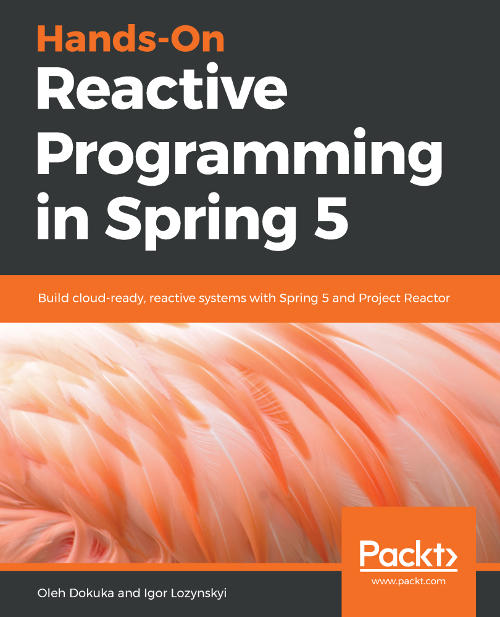

TL;DR – Already have your hands dirty with Spring? Wondering how reactive will play along with Spring and how they will shape each other? Read this book. You will get crushed under the load of information trying to get covered, but will have no regrets.

I tend to avoid reading books whose subject is about a certain library or tool, unless I think it will provide some insight into a certain domain in addition to the software’s internals. And as you may guess, many Spring-related books do not pass this test. Though Reactive Programming in Spring 5 was an exception due to following reasons:
Oleh Dokuka, one of the two authors of the book, is a contributor to many Spring projects, in particular to Reactor. He is further a pretty active figure in Reactor Gitter channel where he is serving a fantastic public service. I personally am really interested in hearing anything he would say about Reactive Streams in general.
Love it, hate it, but almost the entire Java train is fueled by Spring framework. In my day to day work, I am swamped into Spring too. If you would pay close attention, particularly after the recent SpringOne 2018, Spring is full steam moving towards a reactive interface supported by all its whistles and bells – RSocket, R2DBC, WebFlux and WebClient, Reactor, etc. Though sometimes it is really difficult to see how the entire machine is progressing given the excessive amount of sub-projects. I expected the book to provide a 2,000 ft overview to the roadmap of this beast.
If you are dealing with Spring while taking your daily dose of Java, read this book! The book manages to deliver an outstanding coverage of both reactive streams and its integration to almost all of the existing Spring components. In a nutshell, it lays out the following subjects in order:
In conclusion, authors did a splendid job in compiling an exhaustive content covering almost every aspect of reactive programming in Spring 5. They possess an in-depth understanding of the material they are talking about and present it in a digestable form to the user. While this thick compilation has the potential of crushing the reader, it is definitely a rewarding read.
After finishing the book, a cover-to-cover marathon of 538 pages, I felt like I know everything there is to know about reactive programming in Spring.
The extent of the covered content was astonishingly huge. I knew about RxJava, Reactive Streams, and Reactor individually, but not how they relate to each other. The presented historical perspective cleared out the missing pieces of the puzzle for me. I really enjoyed how the prose builds up by examining the problem, introducing the solution, laying out caveats of certain approaches, and drawing real-world comparisons. They repeated this pragmatic pattern for almost any project (Reactor, WebFlux, Spring Data, Spring Cloud Stream, etc.) they introduced.
I was not expecting an in-depth Reactor content, though the authors delivered a perfect job here given the book’s main subject is not just Reactor.
Investigation of pull, push, pull-push streaming, stress of backpressure, and reinforcement of the content with some theory (Little’s and Amdahl’s laws) was pretty enlightening to read. While many would consider these subjects boring, I found it pretty interesting and practical.
The book is too long to a point of becoming exhausting. Many material (Vert.x, Ratpack integration, Reactive Streams TCK, transactions in distributed messaging systems, etc.) could have been left out and then the main juice would fit into ~300 pages. Even then, it is still long. I would have split the book into two: Project Reactor in Action and Reactive Programming in Spring 5. While reading, I also felt such a split as well.
While 90% of the book is pretty objective, certain subjects were presented with bias. Particularly, RSocket-vs-gRPC comparison and using message brokers over system-to-system communication chapters were really opinionated. (I further explained this problem in my notes shared below.)
The presented content is always excercised using Apache Kafka and MongoDB. I suppose this is due to the fact that these two are the only tools that have almost perfect reactive coverage by Spring family of projects.
Below I share my notes ranging from a grammar mistake to a code typo, incorrect or ambiguous information to a thought provoking know-how, practical tip, etc. I further classify them in 4 groups: corrections, improvements, questions, and other.
[p11] Shared processRequest()
method is missing a return statement.
[p12] As a coroutine/fiber fanboy, I could not have passed through the following statement:
In some languages, such as C#, Go, and Kotlin, the same code [a simple inter-microservice communication over HTTP] might be non-blocking when green threads are used. However, in pure Java, we do not have such features yet. Consequently, the actual thread will be blocked in such cases.
I forgot how many times I needed to correct this false misbelief, but I will repeat it here one more time: For any language X compiling to JVM bytecode, if a Java standard library call is [thread] blocking, access to it in X is going to be blocking as well. Kotlin coroutines is no exception to this. Further every convenience X provides, say coroutines, except syntatic sugars, has already been at the exposure of Java via solid libraries like Kilim (since 2006) and Quasar (since 2013).
Additionally, the rules of the game will totally change in a couple of years after the release of Project Loom.
[p16] In Diagram 1.4, what is the difference between solid and dashed lines? I am surprised to see that the image is advertising Apache Kafka while the rest of the components are free from such specification.
[p18] In Diagram 1.5, texts are not readable. (Unfortunately, many of the image texts are not readable in the hardcopy. I don’t know about the e-book though.)
[p28] all cross-service communication is non-blocking anymore. → … is not blocking anymore.
[p46] the actual request
processing continues until SseEnitter.complete() →
… until SseEmitter.complete()
[p46] Justification of why
@Async is necessary here is missing.
[p59] The count operator is
pretty descriptive, it emits the only value … → … emits
only one value …
[p62] Chapter starts with
public interface SearchEngine {
List<URL> search(String query, int limit);
}interface, improves it with
public interface InterableSearchEngine {
Iterable<URL> search(String query, int limit);
}and
public interface FutureSearchEngine {
CompletableFuture<List<URL>> search(String query, int limit);
}After piling up enough motivation, justifies the victory of
Observables:
public interface RxSearchEngine {
Observable<URL> search(String query, int limit);
}As a reader, let me ask the obvious question: Why not using a
Stream<URL> return type instead?
[p103] In the following explanation,
Note that
ScheduledPublisheris effectively an infinite stream and the completion of the mergedPublisheris ignored.
What does merged Publisher refer to? NewsPreparationOperator?
[p106] Unfortunately, building a proper test suit → … test suite
[p114] Rather than focusing this much on the TCK, which is most of the time more relevant for library authors compared to users, I wish the authors would have had spared some pages on pitfalls and patterns of processors, which is bread and butter of reactive stream users and sadly skipped in the previous chapter.
[p123-129] I don’t think the readers really care about reactive streams adjustments for Vert.x, Ratpack or MongoDB reactive streams driver. I find these pages irrelevant and distracting.
[p133] It is page 133 and the reader is newly getting exposed to Project Reactor. Sort of too late, I think.
[p133] Project Reactor, the most famous library in the reactive landscape, … Really? Putting aside I favor Reactor over RxJava, the IT community that I know of does not give me such an impression to back this claim up.
[p141] investigating its reach API. → … its rich API
[p149] Speaking of defer(),
it allows retries, which is, I think, of uttermost importance mostly
overlooked by many and aligns better with reactive streams semantic
compliance. Consider the following code:
<T> Mono<T> f(Mono<T> mono) {
Stopwatch stopwatch = Stopwatch.createUnstarted();
return mono
.doOnSubscribe(ignored -> stopwatch.start())
.doOnTerminate(() -> LOGGER.log("{}", stopwatch));
}versus the alternative below
<T> Mono<T> f(Mono<T> mono) {
return Mono.defer(() -> {
Stopwatch stopwatch = Stopwatch.createUnstarted();
return mono
.doOnSubscribe(ignored -> stopwatch.start())
.doTerminate(() -> LOGGER.log("{}", stopwatch));
});
}Also this is a good spot to talk about assembly-vs-runtime overhead of operator chaining.
[p149] The word wrapping of paragraph starting with Summing this up, Project reactor allows … is broken.
[p150] …, we may still request
Long.MAX_VALUE). → request Long.MAX_VALUE.
[p154] The first paragraph of the page (However, the described approach for defining subscription …) is an eye opener gem. Given many seasoned RS users fell into this trap at least once, a couple of paragraphs detailing these caveats would come really handy.
[p169] Speaking of
Flux#flatMap() operator, concurrency parameter might have been
slightly mentioned here.
[p171] Given we are executing
doOn...() methods (doOnNext(), doOnComplete(),
doOnSubscribe(), etc.) for their side effects, what does happen
when they throw an exception?
[p173] Provide a couple of
examples for log() operator, please! Many people, particularly
coming from RxJava, do not know of its existence.
[p174] However, this allows forthe sending … → … allows for the sending …
[p174] In the Flux.create()
example, I am puzzled about how does it handle the backpressure.
[p183] I think exponential backoff deserves an explanation here. What does it mean? Further, I would have used seconds rather than milliseconds in the example, since the latter does not expose the backoff periods clearly at first sight.
[p188] Flux<Integer>
cachedSource = source.share(); Here and in the rest, all of the
occurences of cachedSource should be replaced with sharedSource.
[p191] The used assembly
phase term will be described in next chapters, hence using it here
is sort of confusing. Further, the given explanation for
transform() has still some room for improvement. Additionally, I
would prefer to see a “when to use compose(), when to use
transform()” guide.
[p196-197] There are 3 places where assemble-time is used, though it used to be referred as assembly-time”.
[p198] … passing
Subscription through ever Subscribers … → … passing
Subscription through Subscribers …
[p200] The last paragraph of p199 goes as follows:
THe importance of understanding this phase is that during runtime we may apply optimization that may reduce amount of signals exchange. [“the amount of signals exchanged”?] For example, as we are going to see in the next sections, we may reduce the number of
Subscription#requestcalls and improve, therefore, performance of the stream.
Then the following tip opens the p200:
… the invocation of
Subscription#requestmethod causes a write to thevolatilefield that holds demand. Such a write is an expensive operation from computation perspective, so it is better to avoid it if possible.
Hrm… I thought the main overhead of Subscription#request calls
was unnecessary individual requests which could have been
batched. Compared to this, write to a volatile does not really
sound like an overhead.
[p200] Diagram 4.8 is missing some explanation.
[p204] In Diagram 4.11, how is
backpressure preserved given there is an external buffer employed
by publishOn. Who maintains this buffer? Is it the task queue of
the ScheduledExecutionService used under the hood?
[p206] Totally lost with the
following sentence: Under the hood, subscribeOn executes the
subscription to the parent Publisher into Runnable, which is the
scheduler for a specified Scheduler.
[p207] In the shared code
snippet, .map() and .filter() are missing ... as input
arguments.
[p208] How does
SingleScheduler handle blocking functions spoiling time-sensitive
executions?
[p209] … so the execution is attache to … → … so the execution is attached to …
[p209] In the next page, it
has been admitted that the shared code snippet does not demonstrate
a good usage of ThreadLocals. So why not sharing a proper use of
ThreadLocals?
[p211] I think Such design
decision … have its own Context. part of the last paragraph
needs a rewrite.
[p213] … bottom (with id
initial) has empty Context at all. → … bottom (with id
initial) has empty Context at all.
[p214] The preciding code show a … → The preciding code shows a …
[p215] … we mentioned another sample of such … → … we mentioned another example of such …
[p217] In Diagram 4.15, the box
at the bottom should be titled subscribe() instead of flatMap().
[p225] Preview Online Code Files at the bottom looks to be a typo.
[p230] … the WebFlux module provides built-in backpressure support … Cool! But how does it do that?
[p254] … using the
PasswordEncoder#matchs … → … using the
PasswordEncoder#matches …
[p254] In the shared snippet,
which scheduler executes the map(p ->
passwordEncoder.matches(...)) line? Netty I/O loop thread? If so
(or some other scheduler of similar importance), is it wise perform
passwordEncoder#matches here?
[p255] In the shared code
snippet, isn’t flatMap(isMatched -> ...) should be replaced with
map(isMatched -> ...)?
[p278] else
if(resposne.statusCode() == EXPECTATION_FAILD) { → else
if(response.statusCode() == EXPECTATION_FAILED) {
[p267] … template has a
placeholder, dataSource, … → … template has a
placeholder, playList, …
[p273-274] All apperances of Albom and albom should be replaced with Album and album, respectively.
[p278] As we can observe from the preciding diagram, with an increase in parallelization, the throughput of the system starts becoming slower and slower. Hrm… Actually the throughput keeps on increasing, though the gain is slowing down. Does it mean the increase in throughput?
[p281] The definitions of contention and coherence are left pretty ambiguous. A couple of practical examples would come really handy.
[p292] Diagram 6.16 misses the legend. The caption can be reworked to fix this as follows: WebFlux (dash) versis WebMVC (plus) throughput… This applies to the rest of diagrams with multiple lines in the following pages.
[p301-303] I would rather use a bar chart for performance figures rather than a table.
[p308] Diagram 6.25 looks like a mspaint.exe 101 assignment submission.
[p311] … the system has four central components … → … the system has three central components …
[p349] … EclipseLink, Spring Data JDBC, and Spring Data JDBC, … → … EclipseLink, Spring Data JDBC, and Spring JDBC, …
[p356-357] All occurences of
updatedBook... should be replaced with updateBook....
[p379] What is the point of Distributed transactions with the SAGA pattern here?
[p405] In Diagram 8.1, there is plenty of space that could have been used and the texts are so small to the point of becoming unreadable.
[p418] This page concludes the Scaling up with Cloud Streams chapter by announcing its triumph over previously mentioned service-to-service architectures. I sadly find this conclusion pretty biased and far from reflecting the reality. There is no silver bullet for such problems and as has always been the case, it depends. Further, almost all of the listed so-called improvements to message broker-based solutions are either as is or with similar approaches applicable to service-to-service architectures as well. It is also surprising to see no mention of practical hurdles one need to overcome while scaling brokers too. You can easily Google and find dozens of Kafka horror stories. For a book that spent chapters on backpressure problems, the question of how is it affected by the delegation of the communication to a broker is totally ignored. Given how objective and well-equiped the authors were throughout the entire book, I am really amazed to see such a hype-oriented conclusion at the end of this chapter.
[p425] In the shared code
snippet, used messagesStream and statisticStream are neither
described, nor defined.
[p430] For a book published in October 2018, it is better to not limit the list of cloud providers offering serverless deployments with AWS Lambda. To the best of my knowledge, GCP, Azure, and many others provide similar functionalities.
[p435] ClassLoad →
ClassLoader
[p437] It is noted that authors
escaped < and > characters in the URL they pass to curl with
%3C and %3E, respectively. Though, AFAIK, curl already does
that if you pass the URL in quotes. Isn’t it?
[p440] … represent independent
ClassLoaders. → … represent independent ClassLoaders.
[p441] implements
Function<Payment, Payment> → implements Function<Payment,
PaymentValidation>
[p441] public Payment
apply(Payment payment) { ... } → public PaymentValidation
apply(Payment payment) { ... }
[p448] A dashed arrow is missing
from Service B’s request(1) line to Service A’s request(10)
line.
[p449] Page contains a pretty well wrapped comparison of Reactive Streams versus TCP for flow control. Given HTTP/3 is almost ready to be served and is employing UDP rather than TCP, a Reactive Streams versus HTTP/3 comparison would be really thought-provoking.
[p450] request(3) under Service
A’s adapter is, I believe, mistakenly placed.
[p454] In the shared code snippet,
isn’t Flux.interval(Duration.ofMillis(100)) too harsh for service
discovery?
[p456] I am aware of the fact that the design of gRPC incurs serious flow control problems, though in a section where you compare contenders like RSocket and gRPC, there is no place for such a vague and ungrounded statement:
Looking at the preciding code, we may get the feeling that gRPC, along with asynchronous message passing, gives backpressure control support as well. However, that part is a bit tricky.
Is backpressure is not handled at all or what? One should not pass over such a claim by hand waving.
[p457] public static class
TestApplication → public class TestApplication
[p457] The RSocket endpoint is
annotated with @RequestManyMapping(value = "/stream1", mimeType =
"application/json"). Given RSocket is a wire protocol, what is the
purpose of the provided path and MIME type here?
[p461] The summary repeats the triumph of message brokers over service-to-service communication one more time. Again, this is a really subjective statement. There are many advantages and disadvantages to each approach. Announcing a winner is a pretty dangerous generalization.
[p471] Shared
StepVerifier.withVirtualTime() trick only works unless you use a
custom scheduler in interval() and timeout() calls.
[p478] Here authors share a hack to
work around the problem of Spring Boot 2.0 WebClient not providing
the mocking support for outgoing HTTP interactions. I would rather
share this trick in a Stack Overflow post, because the readers of
the book will take it for granted, and rather share the
aforementioned WireMock approach.
[p480] Testing WebSocket… Again, this is a hack rather than a solution. I would not share it in the book.
[p491] Diagram 10.1 is totally irrelevant to the content of the page.
[p492] Some texts in Diagram 10.3 are not readable.
[p503] … memory usage by regions, GC pauses, treads count … → … memory usage by regions, GC pauses, thread counts …
[p510] It is wise to note that Spring Boot Admin is not an official Spring project.
[p514-515] No mention of either GCP or App Engine.